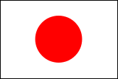

1.2 Peruskuviot ja kuvien yhdistely
Jotta voit piirtää kuvia, ota käyttöön kuvien piirtokirjasto. Kirjoita määrittelyikkunaan:
(require 2htdp/image)
Voit myös avata tästä tiedoston, jossa tämä vaihe on valmiina:
|
| |
|
|


Ota kirjasto käyttöön painamalla run.
Nyt voit tutustua interaktioikkunassa siihen miten peruskuvioita piirretään. Katso käsikirjasta ohjeet ja kokeile näitä:
|
|
|
|
Tallenna nyt kaksi em. kokeilemaasi kuviota määrittelyikkunaan. Tutustu sitten siihen miten kaksi tai useampi kuva yhdistetään yhdeksi kuvaksi. Kokeile yhdistää aikaisemmin tekemäsi kuvat nyt määrittellyikkunassa käyttäen näitä funktioita:
|
|
|
1.2.1 Yksinkertaiset kuvat
Koodaa em. funktioiden avulla seuraavat tehtävät:
Kuvakoodaus 1
Koodaa Japanin lippu. |  |
Koodaa Suomen lippu. | |
Koodaa auto. |
|

Katso ohjetta Japanin lipun mittasuhteista täältä. Katso ohjetta Suomen lipun mittasuhteista täältä.
1.2.2 Monimutkaiset kuvat
Jos teit edellisen tehtävän auton huomasit, että jouduit kirjoittamaan kaksi kertaa saman circle-lausekkeen. Se on turhaa, jos opettelemme käyttämään muuttujaa, johon tallennamme kuvan. Seuraava koodi tallentaa RENGAS nimiseen muuttujaan mustan ympyrän:
Nyt riittää, että koodiin kirjoittaa RENGAS, joka kerta kun haluaa mustan ympyrän. Esim. kaksi RENGASTA vierekkäin samassa kuvassa olisi:
(overlay/xy RENGAS 100 0 RENGAS)
Anna nyt määrittelyikkunassa aikaisemmin tekemillesi peruskuvioille muuttujanimet.
Kuvia voi myös skaalata pienemmiksi tai suuremmiksi, kiertää tietyn asteluvun verran, peilata vaaka- ja pystysuunnassa sekä leikata. Tutustu näihin kuvanmuokkausfunktioihin käsikirjan avulla. Käytä itse nimeämiäsi kuvioitasi ja testaa funktioita niillä.
|
|
|
|
Koodaa em. funktioiden avulla seuraavat tehtävät:
Kuvakoodaus 2
Koodaa kukka. |
|
Koodaa neliö ympyrän osista. |
|
Koodaa pikseligrafiikkaa esim. tämä ukkeli tai suunnittele oma pikselikuva! |
|


{kind=link}